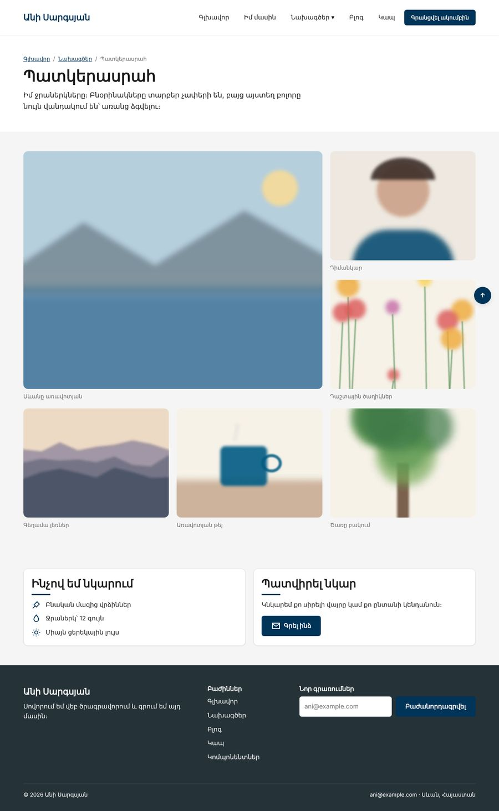
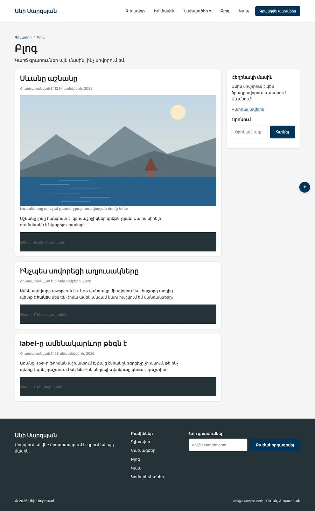

Տնային աշխատանք · HTML Դաս 20 · մինի-նախագիծ
Grid-ը վերցնում է այն գործերը, որոնց համար նախատեսված է․ ցանցեր, 2 × 2 նկար, անվանված տարածքներ և ֆորմա պիտակներով ձախում։
Օգտագործիր միայն Դաս 01–20-ը։ Էջի կմախքը (section > .row > .col) մնում է նույնը․ Grid-ը օգտագործում ենք .col-ի ներսում։
Պատկերասրահում առաջին նկարը զբաղեցնում է չորս վանդակ, բլոգը կառուցված է անվանված տարածքներով, իսկ քարտերի ցանցերը կորցրել են սյուների բոլոր դասերը։


Սկսիր Դաս 19-ի քո կայքից։ Եթե այն չունես, վերցրու Դաս 19-ի օրինակը։
.grid { display: grid; }
.grid-auto {
display: grid;
grid-template-columns: repeat(auto-fit, minmax(min(260px, 100%), 1fr));
}
.col-full { grid-column: 1 / -1; }minmax(260px, 1fr)-ը 240px լայն էկրանին ստիպում է ցանցին լինել 260px և դուրս գալ։ min(260px, 100%)-ը ասում է․ «260px, բայց ոչ ավելի, քան տեղը»։
<!-- Առաջ՝ երեք սյուն, ամեն մեկը իր դասերով -->
<div class="row flex-wrap">
<div class="col w-33 w-md-50 w-sm-100"> <article class="wrapper card">...</article> </div>
...
</div>
<!-- Հետո -->
<div class="row">
<div class="col w-100">
<div class="wrapper">
<div class="grid-auto gap-20">
<article class="card">...</article>
<article class="card">...</article>
<article class="card">...</article>
</div>
</div>
</div>
</div>Հաշվիր, թե քանի դաս կրճատվեց HTML-ից։ Նախագծերի էջում «Այս կայքը» քարտը (.card--featured) զբաղեցնում է երկու սյուն՝ grid-column: span 2, իսկ հեռախոսում՝ մեկ։
.gallery {
display: grid;
grid-template-columns: repeat(3, 1fr);
gap: 20px;
}
.gallery__item:first-child {
grid-column: span 2;
grid-row: span 2;
}Մեծ նկարի sizes-ը փոխիր․ համակարգչում այն հիմա էջի երկու երրորդն է (66vw)։
.blog-layout {
display: grid;
grid-template-columns: 1fr 300px;
grid-template-areas: "posts aside";
}
.blog-layout > .posts { grid-area: posts; }
.blog-layout > aside { grid-area: aside; }
@media (max-width: 768px) {
.blog-layout {
grid-template-columns: 1fr;
grid-template-areas:
"posts"
"aside";
}
}Grid-ը կարող է տարածքները դասավորել ցանկացած հերթականությամբ, բայց Tab-ը միշտ գնում է HTML-ի հերթականությամբ։ Այստեղ HTML-ում գրառումները aside-ից առաջ են, ուստի տեսողական և ստեղնաշարի հերթականությունները համընկնում են։
«Հաշիվ» և «Անձնական տվյալներ» խմբերում p > label + br + input-ը փոխարինիր <div class="form-grid">-ով, որի ներսում label-ը և դաշտը հաջորդում են իրար։ Սյուները՝ 140px minmax(0, 1fr)։ minmax(0, …)-ը պետք է, որ լայն դաշտը (օրինակ՝ ֆայլի) չընդարձակի սյունը նեղ էկրանին։
.grid-auto, առանց սյուների դասերի| Սխալ | Ինչպես ուղղել |
|---|---|
| Ցանցը տոկոսներով և gap-ով դուրս է գալիս | 33% × 3 + 2 × gap > 100%։ Օգտագործիր 1fr |
| Երկու տարրով auto-fit-ը ձգում է դրանք ամբողջ լայնությամբ | Այդպես է աշխատում auto-fit-ը։ auto-fill-ը պահում է դատարկ սյուները |
| grid-area-ն չի աշխատում | Տարածքի անունը չակերտներով է գրված, կամ grid-template-areas-ի տողերում տարբեր քանակի սյուներ կան |
Սրանք Դաս 20-ի տնային աշխատանքի կետերն են։ «մինի-նախագծում» նշվածները արդեն կատարել ես վերևի քայլերում, մնացածը կատարիր առանձին ֆայլերում կամ նույն թղթապանակում։
1fr-ով և ցանց տոկոսներով՝ երկուսն էլ gap: 20px-ով։ Ցույց տուր, ինչու տոկոսներով տարբերակը դուրս է գալիս։auto-fit-ի և auto-fill-ի տարբերությունը՝ 2 տարրով լայն էկրանին։auto-fit-ով։ Համեմատիր Դաս 14-ի flex տարբերակի հետ՝ քանի՞ տող կոդ և քանի՞ դաս կրճատվեց։ մինի-նախագծումminmax(400px, 1fr)-ի խնդիրը 320px էկրանին։ Ուղղիր min()-ով։ մինի-նախագծումgrid-column: 1 / -1 բաժնի վերնագրի համար ցանցի ներսում։ մինի-նախագծումgrid-template-areas-ով՝ header, sidebar, main, footer։ մինի-նախագծումgrid-template-columns: 140px 1fr)։ մինի-նախագծումԵրբ բաժին 03-ի բոլոր կետերը նշված են, բացիր օրինակը և քո էջը կողք կողքի։ Բացիր երկուսի կոդն էլ խմբագրիչում։ Գտիր մեկ բան, որ դու արել ես այլ կերպ, և մտածիր՝ որն է ավելի հասկանալի և ինչու։ Քո լուծումը կարող է տարբերվել և լինել ճիշտ։